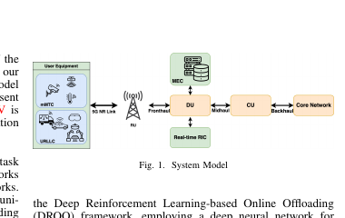
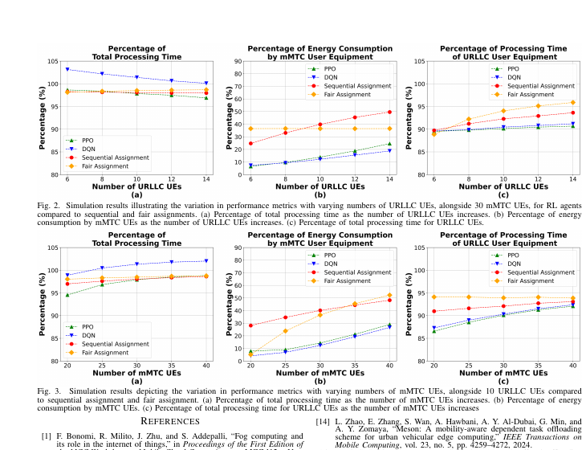

Intelligent task offloading:
manage the 5G edge.
An edge-computing demonstration that uses PPO to decide where tasks should run as URLLC and mMTC device populations change.
Offload the right task at the right time.
Vary URLLC and mMTC demand, then compare PPO, sequential, and fair allocation while tracking processing time, energy, and latency.
What the demo shows
The PPO controller maintains stable processing-time behavior as the number of mMTC devices changes in the reported experiments.
Compared with sequential and fair baselines, the reported policy reduces processing-time and energy tradeoffs across variable URLLC and mMTC task profiles.
The paper’s task-offloading loop maps naturally to the current OAI 5G and GPU-edge demonstration: network conditions become inputs to the offloading decision.


Figures are cropped from the submitted paper to show the system and the most relevant reported results.
Back to demos ↗